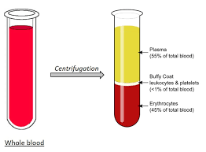

PLASMA

Blood plasma is a light amber liquid component of blood that is freed from blood cells, but holds proteins and other constituents of whole blood in suspension. It makes up about 55% of the body's total blood volume.It is the intravascular part of extracellular fluid (all body fluid outside cells). It is mostly water (up to 95% by volume), and contains important dissolved proteins (6–8%; e.g., serum albumins, globulins, and fibrinogen), glucose, clotting factors, electrolytes (Na+, Ca2+, Mg2+, HCO3−, Cl−, etc.), hormones, carbon dioxide (plasma being the main medium for excretory product transportation), and oxygen. It plays a vital role in an intravascular osmotic effect that keeps electrolyte concentration balanced and protects the body from infection and other blood-related disorders.